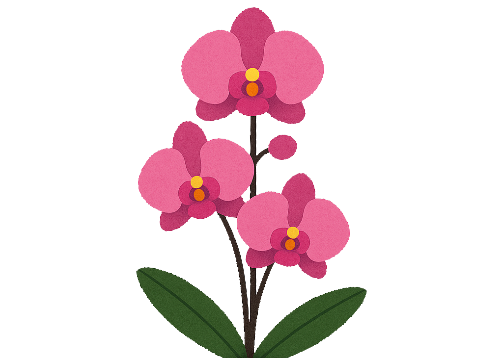
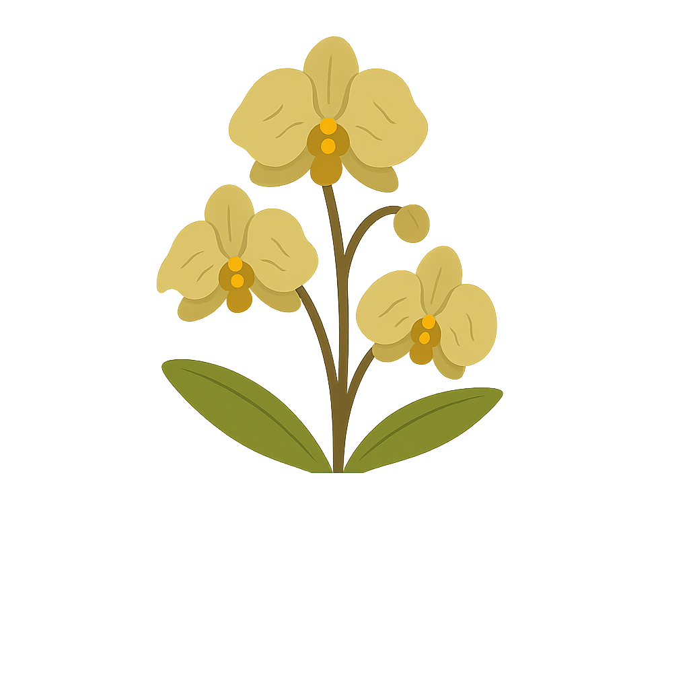
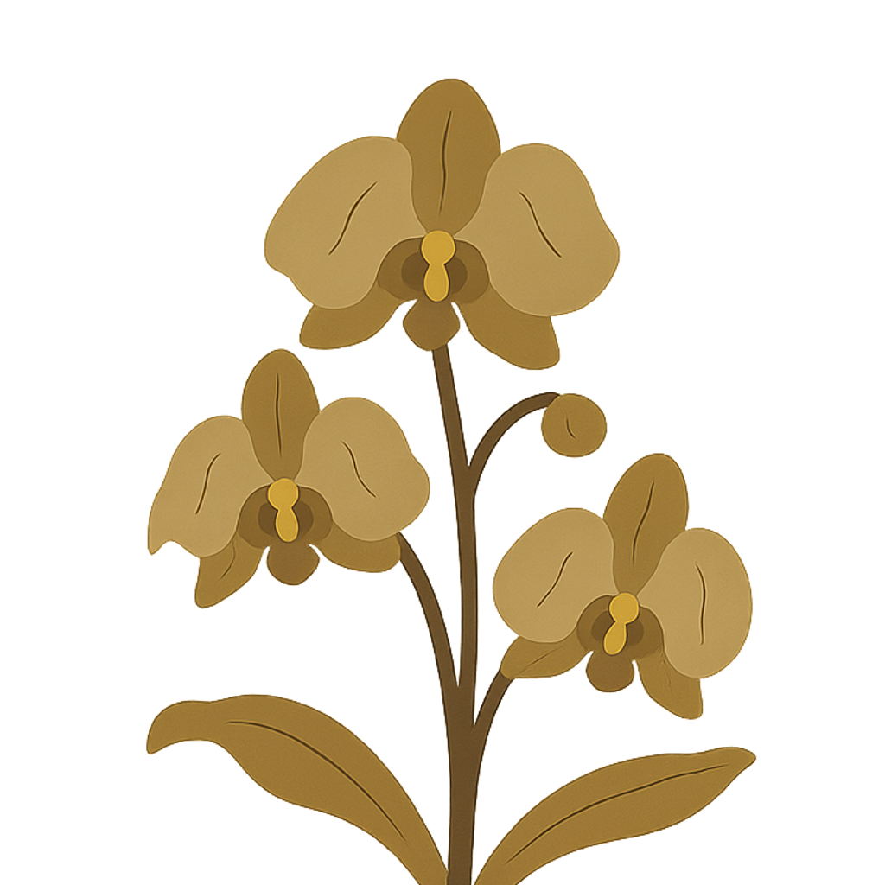
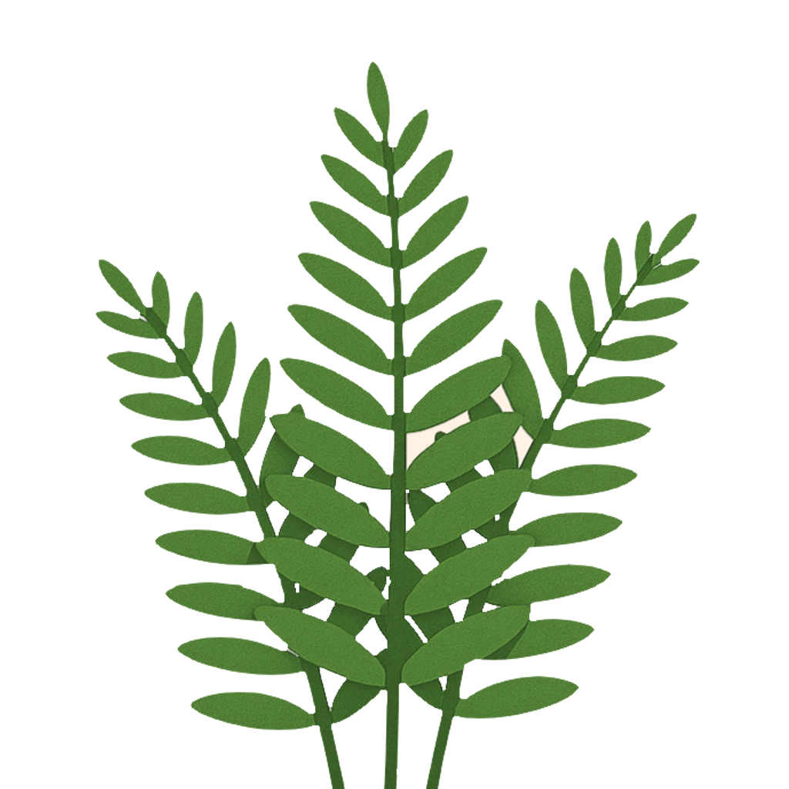
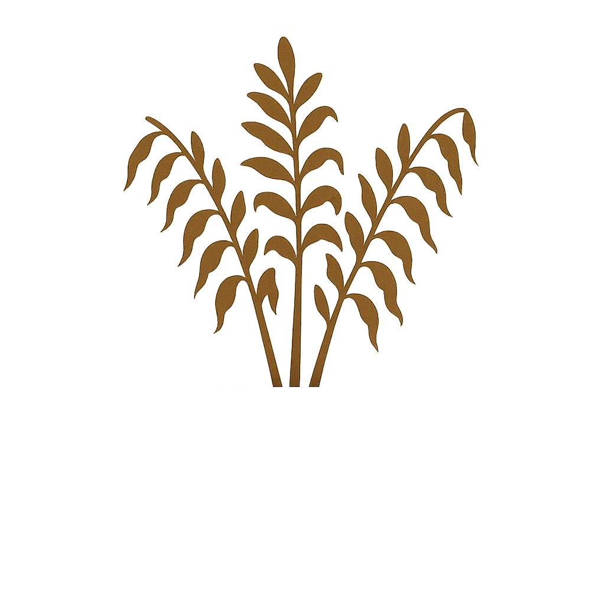
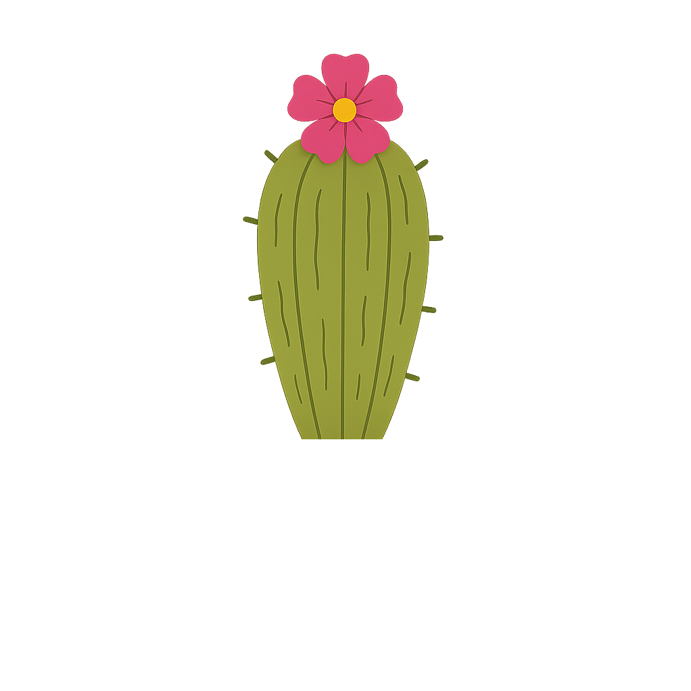
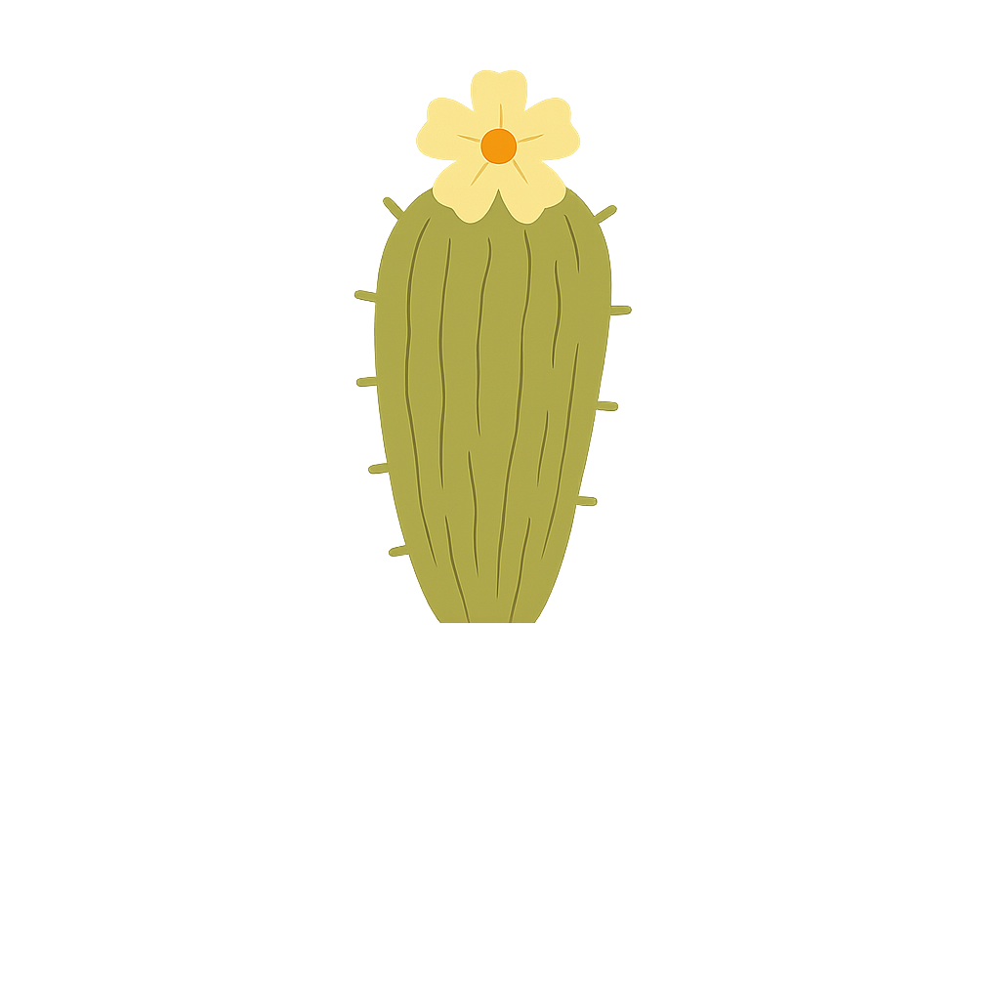
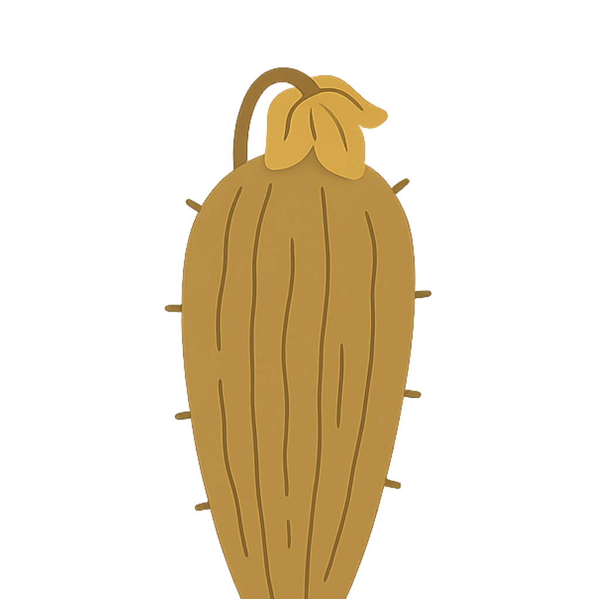

Dbaj o swoją wirtualną roślinę, reagując na zmieniające się warunki środowiskowe.
Każda tura oznacza upływ czasu, a Twoje decyzje wpływają na stan rośliny.
W trybie manualnym samodzielnie sterujesz urządzeniami, natomiast tryb SMART
automatycznie dostosowuje parametry na podstawie bieżących warunków.
🕒 Zegar
Pokazuje aktualną temperaturę, godzinę, porę roku oraz dzień.
· Jedna godzina odpowiada jednej turze w symulatorze.
· Po jej zakończeniu parametry rośliny są aktualizowane, a ich historię można śledzić na wykresie po prawej
stronie.
· W ciągu dnia roślina otrzymuje więcej światła niż w nocy.
· Temperatura, pobieranie wody przez roślinę oraz ilość światła zmienia się w zależności od aktualnej pory
roku.
Następna godzina
Następny dzień
Każda pora roku to nowe wyzwania, jakim trzeba sprostać.
Jeśli chcesz pełnej kontroli, możesz ustawić własne parametry i rozpocząć symulację od niestandardowej pory
roku.
Wybranie własnego trybu oznaczane jest tą ikoną na zegarze
📅 Dostosuj tempo zmiany pór roku, wybierając liczbę dni a następnie początkową porę roku w sekcji poniżej
symulatora.
🕗 Zaleca się korzystanie z przejścia do następnego dnia tylko przy włączonym trybie SMART.
💡 Lampa
Odpowiada za oświetlenie i temperaturę.
· Szczególnie jest ważna w nocy i zimą.
· Tryb SMART potrafi automatycznie dostosować natężenie światła i ogrzewania.
· Przy włączeniu jednego z trybów towarzyszy animacja świecącej diody oraz lampy.
Oświetlenie (ok. +36% światła)
Ogrzewanie (ok. +15°C temperatury)
💡 Oświetlanie i ogrzewanie działają ciągle w turze (tryb aktywny).
🌀 Wiatrak
Steruje wilgotnością oraz temperaturą.
· Pozwala odpompować nadmiar wody bądź nawodnić roślinę.
· Również jest odpowiedzialny za temperaturę, przez wbudowany wiatrak z zraszaczem.
· Przy włączeniu jednego z trybów towarzyszy animacja świecącej diody oraz wiatraka.
· Tryb SMART potrafi automatycznie dostosować natężenie zraszania oraz wentylacji.
Nawadnianie (ok. +4% wilgotności)
Osuszanie (ok. -4% wilgotności)
Wentylacja (ok. -2,6°C temperatury i -1,2% wilgotności)
Zraszanie (ok. -0,9°C temperatury i +3% wilgotności)
💧 Nawadnianie i osuszanie można użyć kilka razy na turę.
💨 Wentylacja i zraszanie działają ciągle w turze (tryb aktywny).
🪟 Roleta
Ogranicza ilość światła zewnętrznego.
· Ważna przy wysokim nasłonecznieniu.
· Przy zwinięciu rolety towarzyszy lekkie przyciemnienie aktualnej pory dnia.
Sterowanie roletą (ok. 50-80% w zależności od warunków)
🕶️ Roleta działa ciągle w turze (tryb aktywny).
🪴 Doniczka
Pokazuje ogólny stan rośliny i pozwala na włączenie trybu SMART.
· Tryb SMART steruje każdym urządzeniem, nielicząc zegara.
· O aktywacji trybu informuje błękitna dioda pod przyciskiem.
Aktywowanie trybu SMART
Doniczka ma wbudowane czujniki, które informują o niekorzystnych warunkach dla rośliny.
Aktualny stan rośliny (zdrowie) jest wyświetlany przez cały czas.
🧠 Tryb SMART aktywowany zostaje odrazu.
⚠️ Uwaga: po włączeniu SMART, tryb manualny zostaje tymczasowo wyłączony.
⚙️ Mechanika symulacji
· Parametry są aktualizowane co turę (godzina w symulatorze).
· Urządzenia mają różną "siłę działania".
· Warunki zmieniają się zależnie od pory dnia i roku.
· System SMART wykorzystuje logikę rozmytą do podejmowania decyzji.
📊 Wykresy rozmyte (fuzzy)
· Pokazują, stany jakie wybrana roślina może mieć.
· Wykorzystują logikę rozmytą do oceny warunków środowiskowych.
· Aktualna wartość oznaczona jest wskaźnikiem na osi.
· System wyznacza dominujący stan i jego stopień przynależności.
⚖️ Wykresy pozwalają sprawdzić, jak system ocenia aktualne warunki rośliny i na jakiej podstawie decyduje o
ich stanie.
📈 Historia
· Pokazuje historię parametrów rośliny z ostatnich 24 godzin (tur).
· Aktualizuje się automatycznie po każdej turze.
· Uwzględnia: zdrowie rośliny, wilgotność gleby, światło oraz temperaturę.
· Daje możliwośc analizowania wpływu różnych decyzji na stan rośliny.
💡 Wykres przedstawia dane w czasie, gdzie każda godzina to jeden punkt pomiarowy.
⚠️ Historia obejmuje tylko ostatnie 24 godziny. Starsze dane są usuwane.
🌱 Wybór rośliny
W każdym momencie można zmienić roślinę w sekcji poniżej symulatora.
· Można dostosować jej poczatkowe zdrowie, wilgotność gleby, światło oraz temperaturę.
· Wybór jest ograniczony do trzech rościn: paproci, storczyka oraz kaktusa.
· Każda z roślin posiada inne wymagania.
· Wygląd rośliny zależy od jej stanu i zdrowia.
· Zmiana rośliny nie resetuje czasu oraz historii.
🌹 Zaleca się wybrać roślinę po rozpoczęciu nowej gry, ponieważ zmiana pory roku automatycznie zaczyna
symulacje od nowa.
🎓 Możliwość zmiany rośliny w trakcie działania symulacji pozwala porównać, jak różne gatunki reagują na te
same warunki.
🌺 Parametry storczyka
Storczyk to roślina wymagająca zrównoważonych warunków.
💧 Wilgotność gleby: optymalna 50-70%
💡 Światło: umiarkowane (ok. 50%)
🌡️ Temperatura: optymalna 21-27°C

Dobry stan storczyka

Średni stan storczyka

Zły stan storczyka
⚙️ Szybkość wysychania gleby: średnia
⚙️ Adaptacja temperatury: umiarkowana
🌿 Parametry paproci
Paproć preferuje wilgotne i stabilne środowisko.
💧 Wilgotność gleby: wysoka (65-80%)
💡 Światło: niskie do umiarkowanego (30-50%)
🌡️ Temperatura: optymalna 22-27°C

Dobry stan paproci

Zły stan paproci
⚙️ Szybkość wysychania gleby: wysoka
⚙️ Adaptacja temperatury: szybka
🌵 Parametry kaktusa
Kaktus jest odporną rośliną preferującą suche i ciepłe warunki.
💧 Wilgotność gleby: niska (12-38%)
💡 Światło: wysokie (70-90%)
🌡️ Temperatura: optymalna 28-35°C

Dobry stan kaktusa

Średni stan kaktusa

Zły stan kaktusa
⚙️ Szybkość wysychania gleby: niska
⚙️ Adaptacja temperatury: wolna
🎊 Koniec 🎊
Dziękuję za przeczytanie poradnika.
Życzę miłej zabawy i powodzenia w opiece nad rośliną!